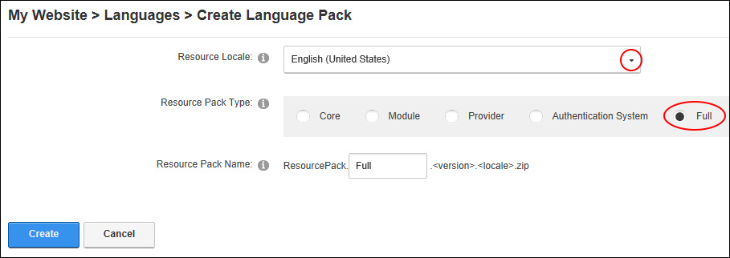
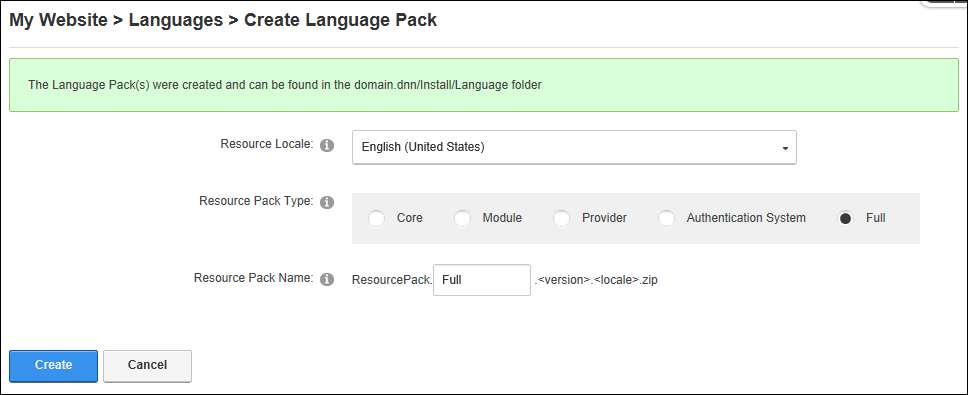

Creating a Full Language Pack
How to create a full language pack using the Languages module. Restricted to SuperUsers only.
- Navigate to Admin > Advanced Settings >
 Languages - OR - Go to a Languages module.
Languages - OR - Go to a Languages module.
- Select the Languages tab.
- Click the Create Language Pack button.

- At Resource Locale, select the locale that want to generate the language pack for.
- At Resource Pack Type, select Full.

- Optional. In the Resource Pack Name text box, modify the name of the generated resource pack. Note: Part of the name is fixed.
- Click the Create button. This displays a success message that includes the path where the language pack is located.
